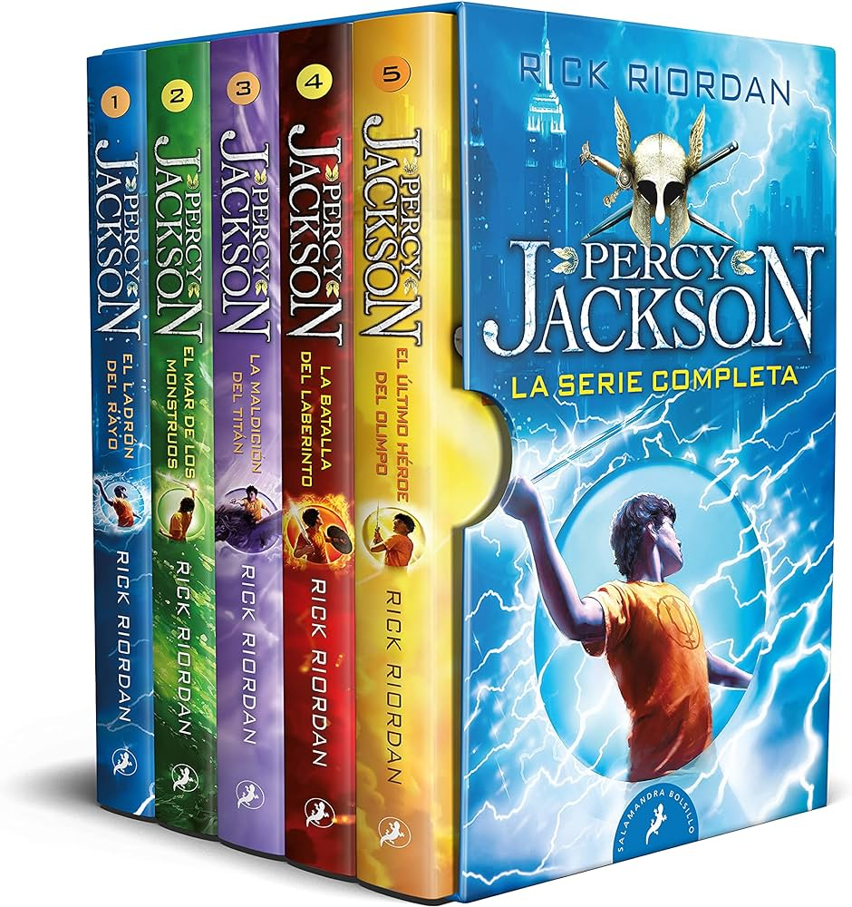
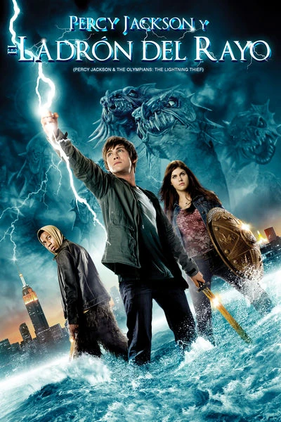

Percy jackson es el nombre de una saga de libros sobre el propio personaje Percy jackson y sus aventuras con sus amigos en un mundo que mezcla la realidad con la mitologia, donde aparte de enfrentarse a los problemas que trae la vida con ser adolescente también tendras que lidiar con mounstros mitologicos lliendo a por ellos, profecias, dioses y todo tipo de dramas donde solo podran sobrevivir ayudandose los unos de los otros
Aparte de los libros Percy jackson y los dioses del olimpo se saco un Spinoff donde recoje los acontecimientos de siete semidioses y los obstáculos relacionados con el despertar de la diosa tierra, Gea, y sus esfuerzos para poner fin a ella. Recoge unos meses después del final de Percy Jackson y los dioses del Olimpo llamado Los heroes del olimpo tambíen otro llamado Las pruebas de Apolo , Magos y Semidioses: Percy Jackson se une a los kane , La profecia del rayo y las estrellas , El expediente del Semidiós , Los diarios del semidiós
La saga de Percy Jackson y los dioses del Olimpo si se llegoa llevar a la pequeña pantalla en dos ocasiones la primera fue en 2010 con el reparto de Logan Lerman , Brandon T Jackson, Alexandria Daddario, Jake Abel, Pierce Brosnan y muchos otros, con una escena mitíca que quedo grabada en la mente de muchos niños y adolescentes
Luego se saco una secunda peli con el mismo reparto en 2013 sobre el segundo libro : Percy jackson y el mar de los mounstros
Y más recientemente se ha sacado una Serie de percy Jackson la cual su reparto a sido elegido por el propio autor que esta siendo en partes odiada y en partes amada, la primera mejora es que en esta nueva serie los personajes si aparentan la edad de los libros pero en cambio hay personajes totalmente distintos a su descripción en los libros como Annabeth Chase la cual se la describía como rubia de ojos azules y en esta nueva serie tiene ojos marrones y es negra pero bueno parece que algunas cosas nunca cambian porque en las anteriores pelis Annabeth Chase tampoco era acorde los libros
| Percy jackson y los dioses del olimpo | Los héroes del Olimpo | Las pruebas de Apolo | La profecía del rayo y las estrellas | El expediente del Semidiós | Los diarios del semidiós | |
|---|---|---|---|---|---|---|
| Percy jackson y el ladrón del rayo | El héroe perdido | El oráculo oculto | ||||
| Percy jackson y el mar de los mounstros | El hijo de Neptuno | La profecía oscura | ||||
| Percy Jackson La maldición del titán | La marca de Atenea | El laberinto en llamas | ||||
| Percy Jackson la batalla del laberinto | La casa de Hades | La tumba del tirano | ||||
| Percy Jackson el último héroe del olimpo | La sangre del Olimpo | La torre de Nerón | ||||
| Percy Jackson el cáliz de los dioses |